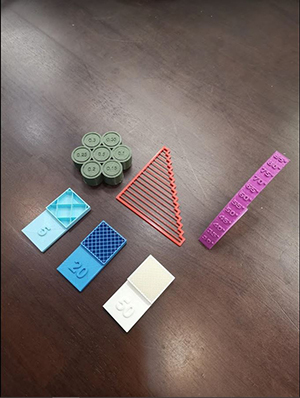
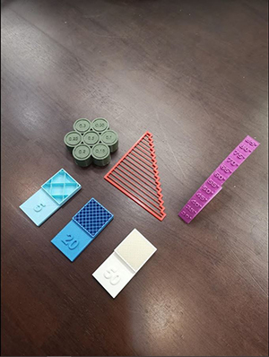

Jeanine's Website
Fusion360 3D Printing stuff
On 18 November, we were given an assignment to self learn on how to design a 3D object on Fusion360, so that we could save it as a STL file and 3D print it on the Ultimaker 2+ machine in school.
However during the making of the personalised keychain, I really wanted to input calligrphy writings to the keychain plate itself. Hence, I had referred to other tutorials, and used a different software : Adobe Illustrator, to enable me to input my chosen JPEG design onto my finalised keychain plate.

In the next few lessons, we were told to come together as a group of 4 to experiment with the 3D printer's capablity in printing.
 

During the making of the infill test, I chose three different machines, with three different filament colours so that this could show obvious differences between the three different infill tests I had made. I was supposed to make 4 different infill tests. However, the 10% infill test got messed up, and it caused the printing to be unsuccessful, hence it is not presented here in my website.